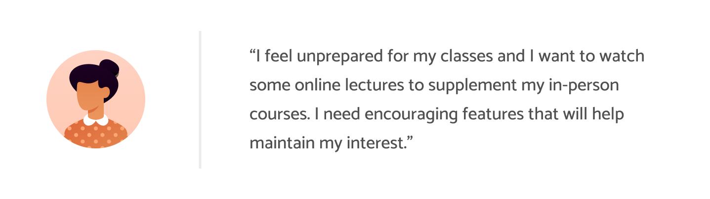
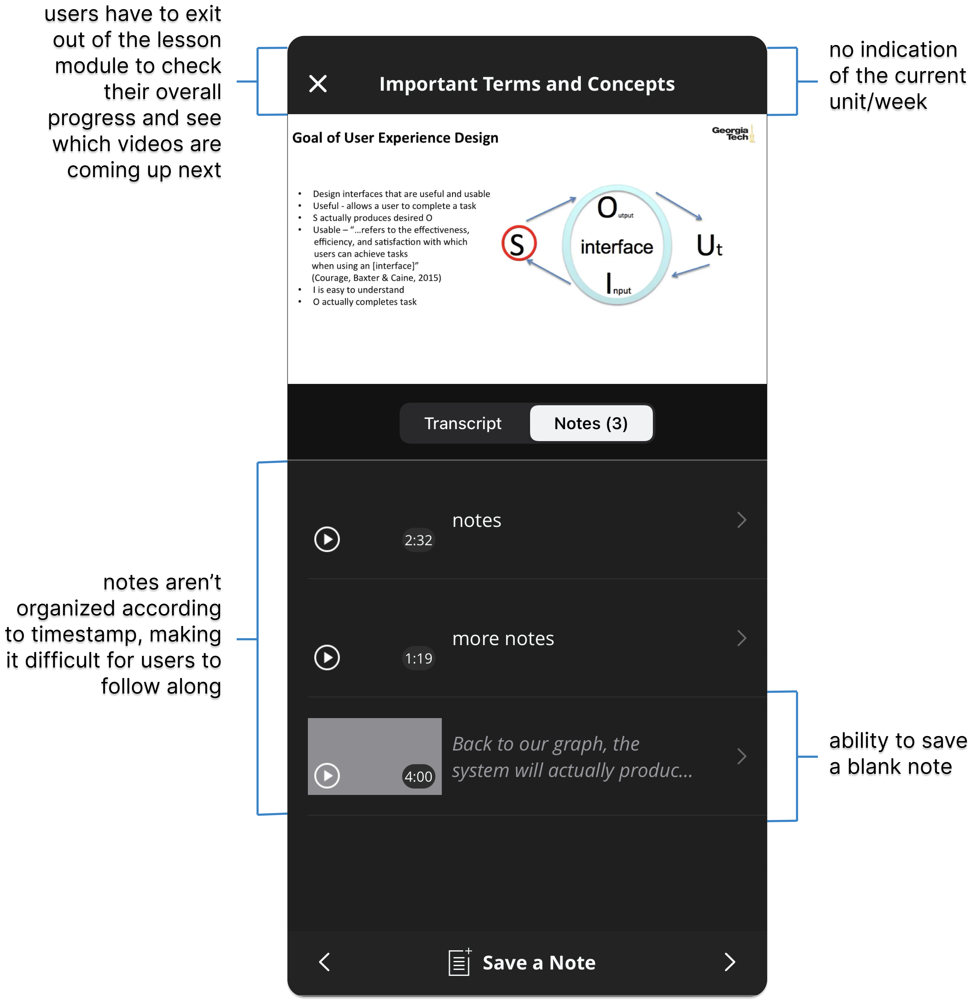
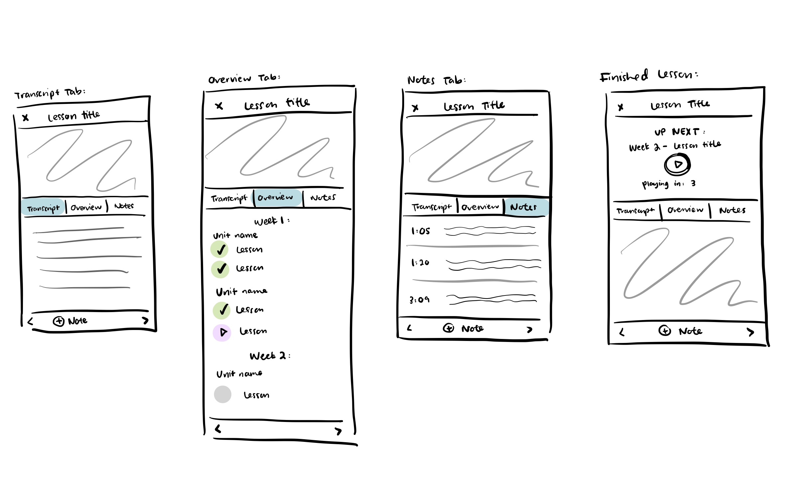

coursera redesign.
ROLE
designer & researcher
TEAM
carmen li (me), tj nguyen, christian flores, anuujin tsedenbal
DURATION
december 2021 (2 weeks)
overview
Coursera has a huge student body. As of 2021, the platform has grown to 82 million registered users and offers over 3000+ courses. To deliver lessons, it uses pre-recorded videos interspersed with checkpoint quizzes. However, only 40% of students who start a course continue until its completion. And a closer look at the mobile application may clue us in why this is the case. While the mobile application includes a wide variety of open online courses, specializations, and certifications, the design is prone to inconsistency and confusion. A streamlined user experience can improve viability and retention rate for users considering online learning.
problem
Coursera users need an interactive learning experience with user-oriented features that allow them to stay engaged with course content to encourage long-term, effective learning.
user research
We conducted in-depth interviews on 4 users to discover Coursera-specific insights and narrowed it down to these major pain points.
core findings
●
It's difficult for users to be aware of their overall process in a course due to lack of progress signifiers.
While viewing lessons, users have no indication of which videos are in progress or have been completed. It's also possible for users to become unaware that they have began lessons for another unit while in the video module.
●
There is a mismatch between the language/visuals on Coursera and what users are expecting or accustomed to in real life.
Users struggled to navigate the mobile app due to the lack of intuitive labels and organization of information. Examples include the discussion section being labeled as "Forums" and a user's enrolled courses is found under the tab labeled as "Learn". The "Notes" section organizes individual notes according to the order they were added, rather than grouping them according to timestamp order.
target users
Drawing on our user testing, we created two types of user personas who are looking to use Coursera as their choice of online learning platform.

competitive analysis
We compared Coursera to applications such as LinkedIn Learning, Youtube, and EdX because they are often used for educational purposes and utilize different methods to display videos.

component redesign
Problematic Component to Redesign
Based off of our user and competitor research, we decided to tackle redesigning the video lesson module due to the following reasons annotated before.
Justification

sketches
We sketched out possible ideas to implement, incorporating the current mobile UI of Coursera with features seen in our competitors.

hi-fi prototype
notable features
●
Overview tab to provide quick access to weekly module
●
Search bar to rapidly sift through each section
●
Color and icon signifiers to indicate status of lesson modules (completed, in progress, to-do)
●
Expansion button to minimize and enlarge full lessons
●
Touch-activated video options
●
Auto-play prompt with a 3-second delay
The features described above were implemented to provide more user control and flexibility without interrupting the current work flow.
figma link
View interactive prototype here.takeaways
This case study highlights our efforts to implement design choices that would encourage long-term proactive learning. Since we were constrained to redesign only one component of the app, we chose one that we believed to be a huge determining factor towards whether or not a user retained interest in a course.